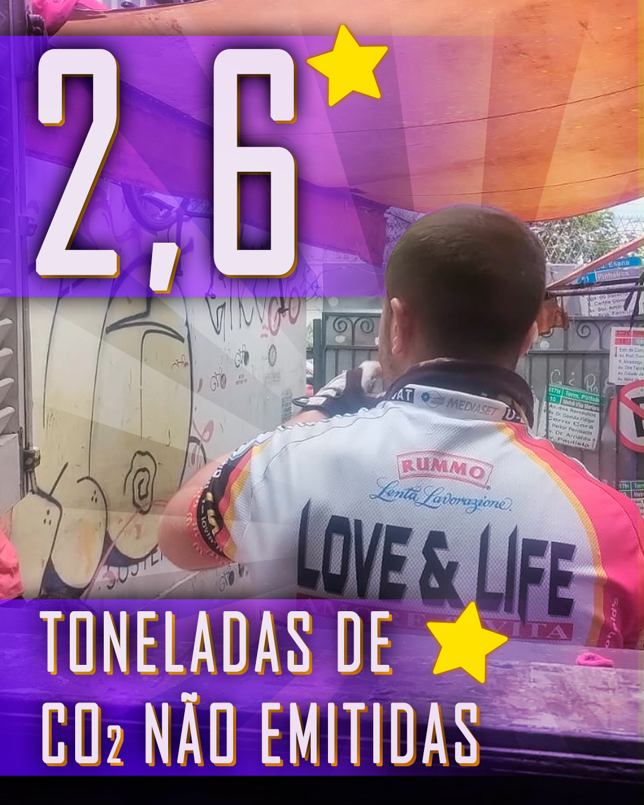
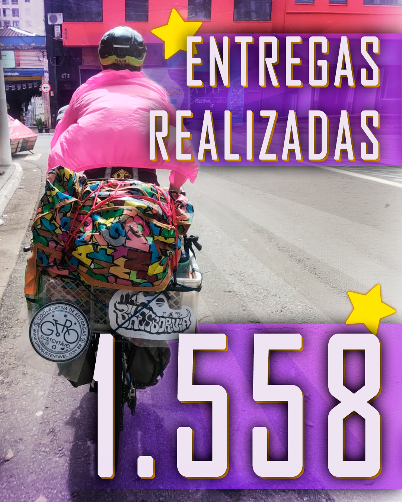
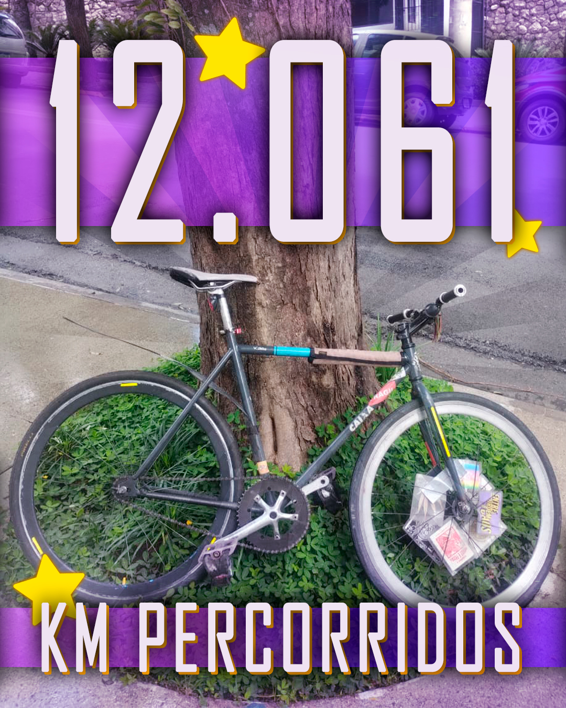

Movendo o presente, construindo um futuro sustentável.
Conheça a Giro Sustentável e descubra nossa proposta para a logística urbana.

Conheça a Giro Sustentável.
Conteúdo institucional da empresa será inserido aqui.
Conheça nossos serviços →Nossos serviços
Soluções de entrega por bicicleta, pensadas para atender diferentes necessidades com agilidade e responsabilidade.
Delivery
R$ 35/h
Serviço com horário previamente combinado com o cliente.
Exemplo: das 11h às 14h.Expresso
R$ 15
Entregas rápidas de documentos ou objetos, para distâncias de até 5 km.
R$ 3 por quilômetro excedente.Área de atendimento
Atendemos preferencialmente a região indicada em nossa área de cobertura. Dependendo da necessidade de cada cliente, podemos analisar outras localidades.
Entrega sustentável, impacto consciente.
A Giro Sustentável reduz a pegada de carbono ao realizar entregas 100% a pedal, sem emissões de CO₂ durante os deslocamentos.
A empresa reconhece que toda atividade gera impacto. A produção de camisetas e ecobags, por exemplo, pode emitir entre 2 e 7 kg de CO₂ por peça.
Outros aspectos operacionais, como a manutenção das bicicletas e o uso de tecnologia, também deixam sua marca.
Por isso, a Giro busca minimizar seu impacto, escolhendo fornecedores responsáveis e incentivando práticas mais sustentáveis.
Escolher a Giro é apoiar uma logística mais limpa e consciente!
Balanço mensal
Kilometragens percorridas pelos nossos giradores, economia de CO₂ e quantidade de entregas realizadas no mês



R$ 35/h
Serviço com horário previamente combinado com o cliente.
Exemplo: das 11h às 14h.Expresso
R$ 15
Entregas rápidas de documentos ou objetos, para distâncias de até 5 km.
R$ 3 por quilômetro excedente.Área de atendimento
Atendemos preferencialmente a região indicada em nossa área de cobertura. Dependendo da necessidade de cada cliente, podemos analisar outras localidades.